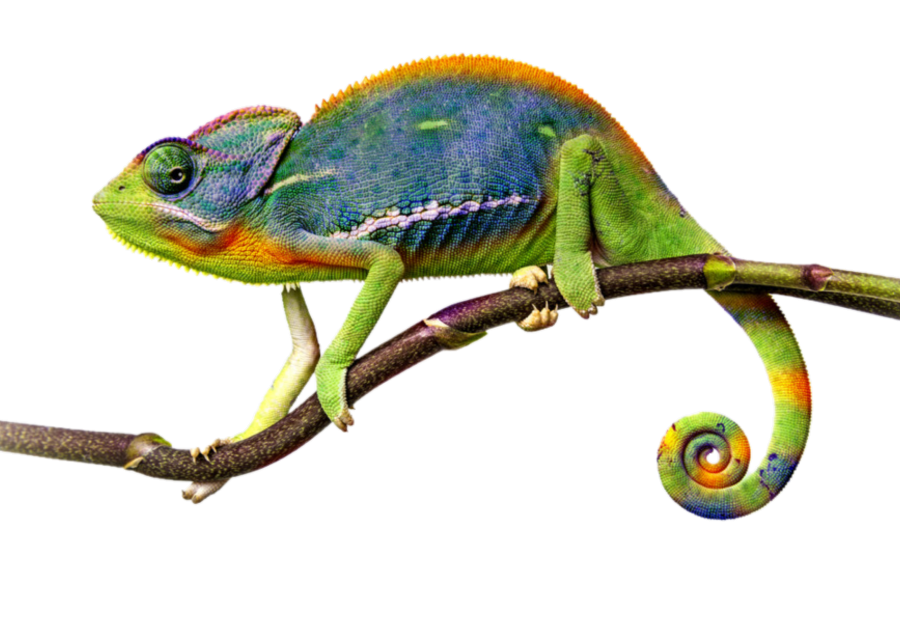
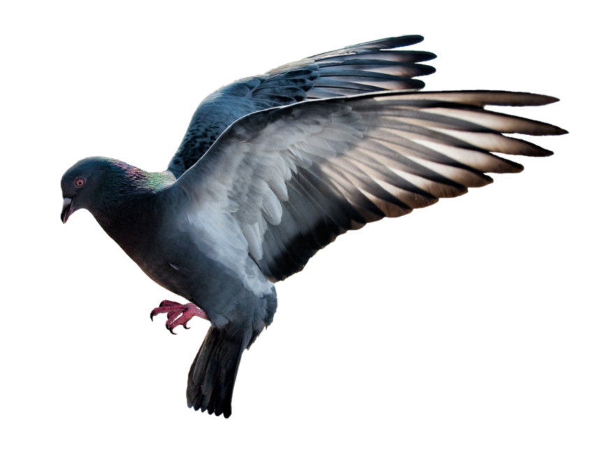
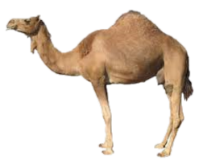
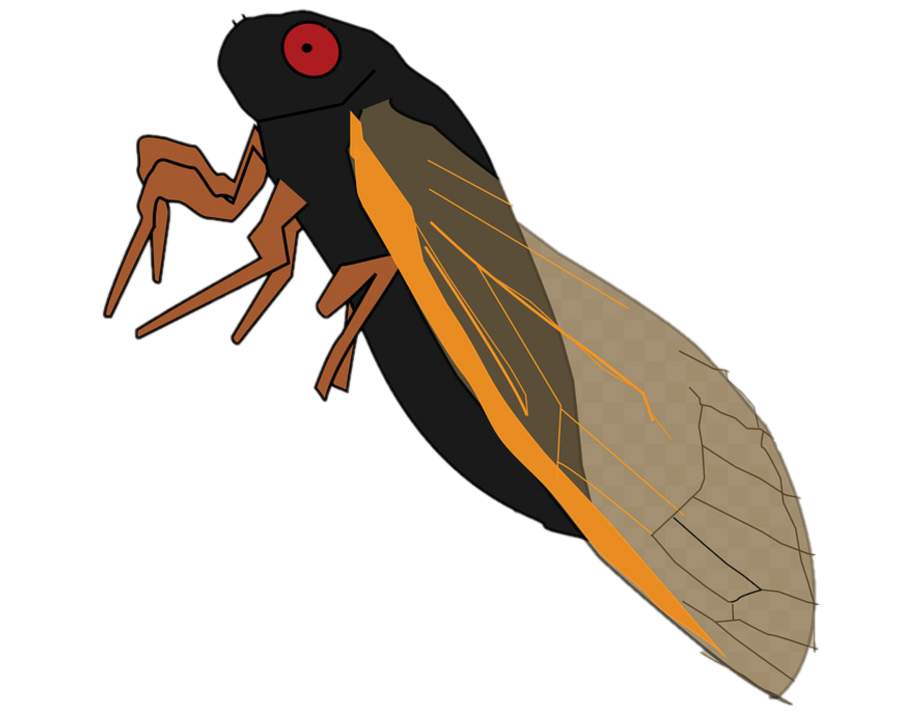
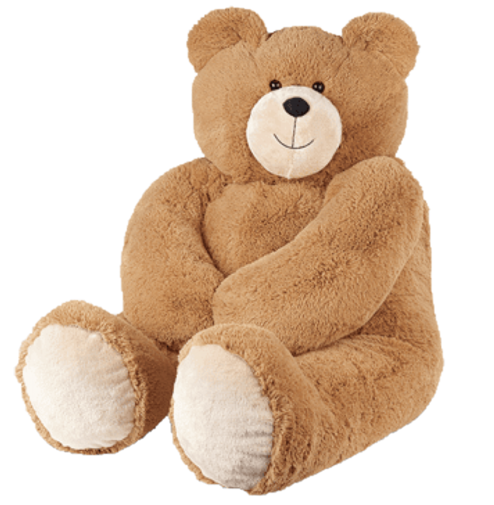

Chameleon

Intersting fact about chameleon
- Chameleon are reptiles that are part of the iguana suborder.
- Changing skin color is an important part of communication among chameleons.
- Most chameleons have a prehensile tail that they use to wrap around tree branches.
Pigeon

Intersting fact about pigeon
- Pigeon are incredibly complex and intllegent Birds.
- Pegion are renowed for their outstanding navigation abilities.
- Most chameleons have a prehensile tail that they use to wrap around tree branches.
Camel

Intersting fact about camels
- There are two types of camels: One humped or “dromedary” camels and two humped Bactrian camels.
- Camels have three sets of eyelids and two rows of eyelashes to keep sand out of their eyes.
- Camels have thick lips which let them forage for thorny plants other animals can’t eat.
Panda
Intersting fact about pandas
- A giant panda is much bigger than your teddy bear.
- Giant pandas are good at climbing trees and can also swim.
- Pandas go from pink to white and black (or brown).
Flying Cicada

Intersting fact about flying-cicada
- Cicadas can survive a huge fall as babies, or nymphs.
- Most flying-cicada have red-orange eyes. But occasionally cicadas have blue, white or grayish eyes. Keep on the lookout.
- They’re true bugs (from the order Hemiptera). So you can call them a bug and be scientifically accurate.
Teddy Bear

Intersting fact about Teddy Bear
- Teddy bears got their name from the story that Teddy Roosevelt refused to shoot a bear cub while on a hunting trip in 1902.
- The Oxford English Dictionary dates the first use of the term teddy bear to 1906.
- The world's smallest stitched teddy bear is a mere 0.29 inches tall! It was created by South African artist Cheryl Moss who is known for her minuscule work.